New to Onset? Start here
For creators using Onset for the first time. No coding needed: just follow along.
Onset is one app for the whole video: writing the script, filming, editing, and making the cover and posts. It has an AI assistant called AI Onset. Type or speak to tell it what to do. You can watch every step it takes and pause it at any time.
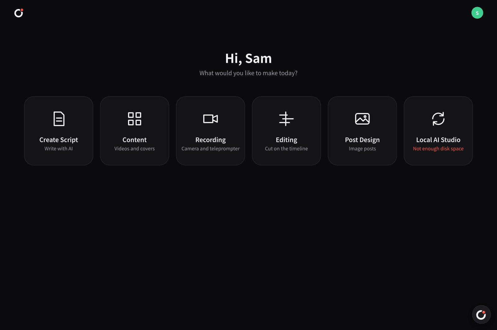
- Write the script
- →
- Film
- →
- Edit
- →
- Cover and posts
- →
- Export
Three things to know first
- The round button in the corner of every screen is AI Onset. Not sure how to do something? Just ask it. You can also press ⌘J.
- Anything the AI changes can be undone. After each AI change there's a "↶ Undo this AI change" button.
- Anything that costs money asks you first. Cloud generation always shows a quote, and only goes ahead when you agree.
About the screenshots
The screenshots were taken in a test setup (test account "Sam", a test video voiced by the Mac's text-to-speech, no real AI). So some text on screen will differ from what you see, for example the save location shows a test folder and the AI's answers are short. The buttons and where they are stay the same.
Installing and opening Onset for the first time
1-1 Put Onset on your Mac
- Open the Onset
.dmgfile. - Drag Onset into the Applications folder.
- In Applications, right-click Onset → Open (don't just double-click it).
"Apple could not verify the developer"?
The first time, macOS may say Onset can't be opened because the developer can't be verified. That's because Onset hasn't been notarised by Apple yet. Nothing is broken.
- Option 1: Right-click Onset → "Open" → click "Open" again.
- Option 2: Open System Settings → Privacy & Security → scroll down to the line about Onset → click "Open Anyway" → enter your Mac password.
You only do this once. After that, Onset opens with a normal double-click.
1-2 Terms of Use and Privacy Notice
The first time you open Onset, you'll see the "Terms of Use and Privacy Notice" (in English or Chinese, following your Mac's language).
- Read it through: your videos and scripts stay on your own device; only when you use an AI or cloud service does Onset send that service what the job needs.
- Tick "I have read and agree".
- Click "Agree and continue".
If you click "Don't agree", you can't use Onset. To read the terms again later: avatar at the top right → "Settings" → "About" → "Terms of Use and Privacy Notice". When the terms change, Onset asks you to agree again.
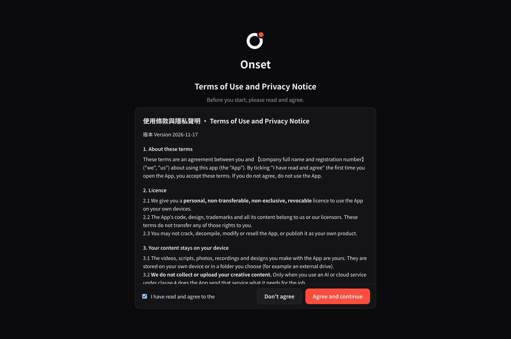
1-3 Pick a language and create your account (Profile)
After agreeing, you'll see this screen.
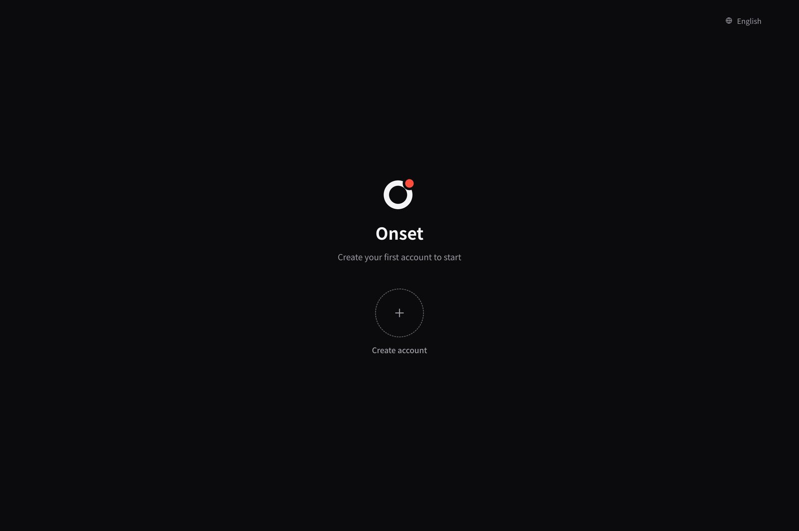
- Pick the app language at the top right: 繁體中文, 简体中文, English, Bahasa Melayu, 日本語, 한국어.
- Click ＋ "Create account" in the middle.
- Fill in three things: Email, Username (the name shown), Password (at least 6 characters).
- To go straight in by clicking your avatar, without typing a password each time, tick "No password needed to sign in". You can change this later in Settings.
- Click "Continue".
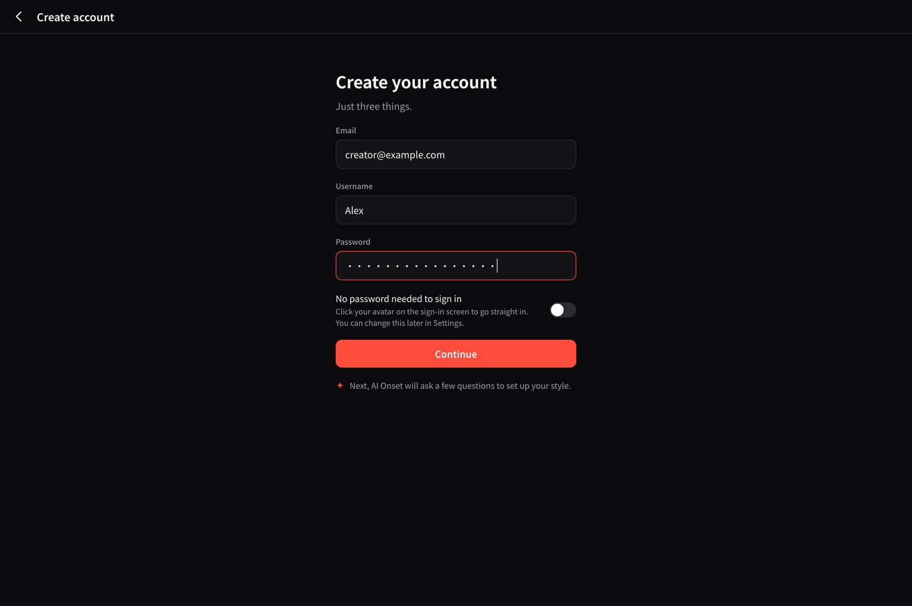
1-4 The setup assistant: pick an AI, install the tools
The first time you sign in on a new Mac, the "Setup assistant" comes first. It checks what this Mac already has; anything missing installs with one click into your own folders, with no admin password. Nothing installs until you press its button, and nothing downloads in the background.
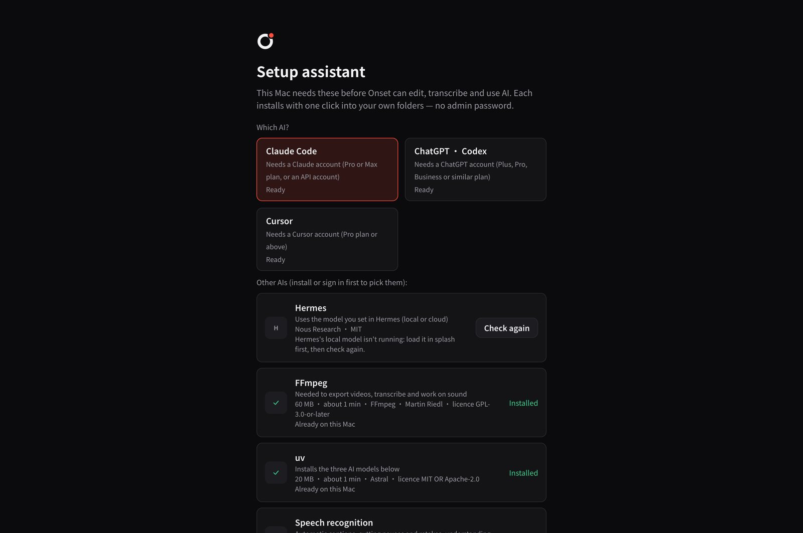
First: which AI? AI Onset's "brain" can be one of these:
| AI | What it needs |
|---|---|
| Claude Code | A Claude account (Pro or Max plan, or an API account) |
| ChatGPT · Codex | A ChatGPT account (Plus, Pro, Business or similar plan). Answers appear all at once instead of word by word |
| Cursor | A Cursor account (Pro plan or above). Web searches and pictures are handed to Claude Code (if it's installed and signed in), and the screen says so |
| Hermes | No extra account: it uses the model you set in Hermes (local or cloud). A local model is free but slower; how slow depends on your computer |
An AI that's installed and signed in says "Ready": click it to choose it. The others are listed under "Other AIs": click "Install", then "Sign in". Terminal opens and takes you to the browser to sign in, and the page updates by itself when you're done.
Then: tools and models. Further down are FFmpeg (for exporting and transcription), uv (installs the models below), speech recognition, AI voice-over and voice separation, each with its size, roughly how long it takes, and its licence. "Local generation (optional)" has its own install page.
When you're ready, click "All set — start".
1-5 Channel style questions (about 1 minute)
Next, AI Onset asks you 7 questions to set up your channel's style. Click the closest answer for each, or type your own answer in the box below.
| Step | Question | Examples |
|---|---|---|
| 1 Style | The overall feel of your channel | Warm handmade, Sharp and professional, Playful and fun, Calm and refined |
| 2 What you film | What you mostly make | Vlog, Tutorial, Product review, Interview |
| 3 References / links | Videos or accounts you like | Add screenshots, paste links, or "No reference" |
| 4 Editing style | The pace of your edits | Fast-paced, Clean and simple, Cinematic, Documentary |
| 5 Colour grading style | The colour of your picture | Natural, Warm, Cool, Film look |
| 6 Mascot | Do you have a mascot? | Add a picture, or "No" / "Later" |
| 7 Logo | Do you have a logo? | Add a picture, or "No" / "Later" |
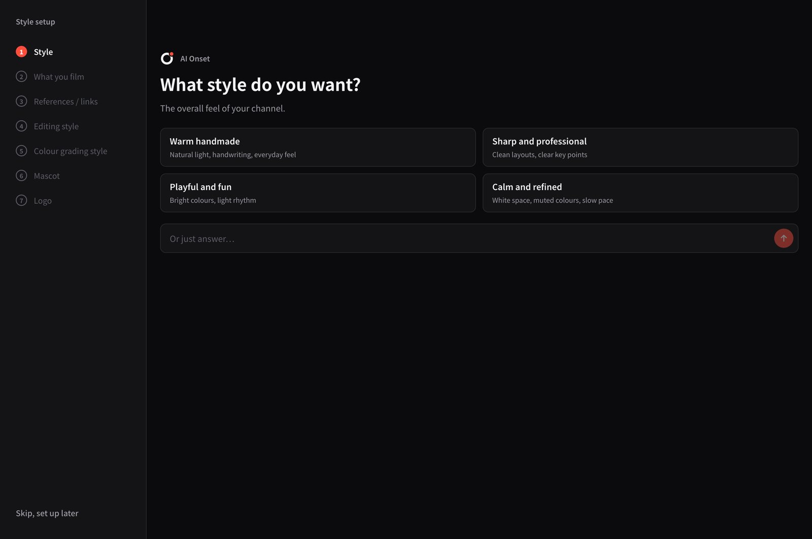
Don't want to answer now? Click "Skip, set up later" at the bottom left.
When you're done, AI Onset creates four styles: a script style, an interview style, a design style and an edit style. It follows them whenever it writes scripts, edits or designs covers. To change them, go to your avatar at the top right → "Settings" → "Styles".
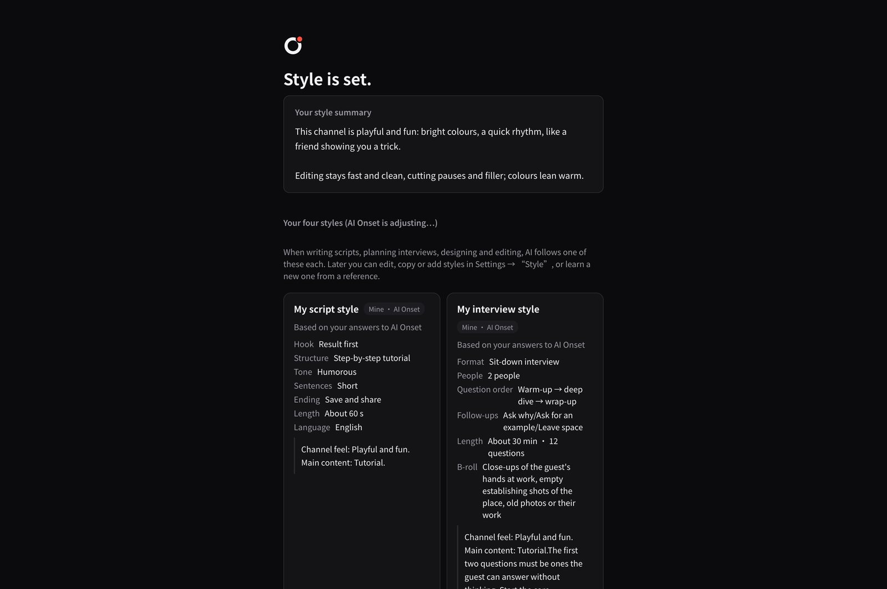
1-6 Download the AI models?
The last step asks which AI models should run on this Mac:
- Speech recognition (Whisper, 1.6 GB): automatic captions, cutting pauses and retakes. Recommended.
- AI voice-over (IndexTTS, 2 GB): reads your script in the voice of a sample you record.
- Voice separation (Demucs, 800 MB): takes out background music and noise.
Use the switches on the right to choose, then click "Agree and download". Not sure? Click "Maybe later". You can add or remove them later in Settings → AI & tools.
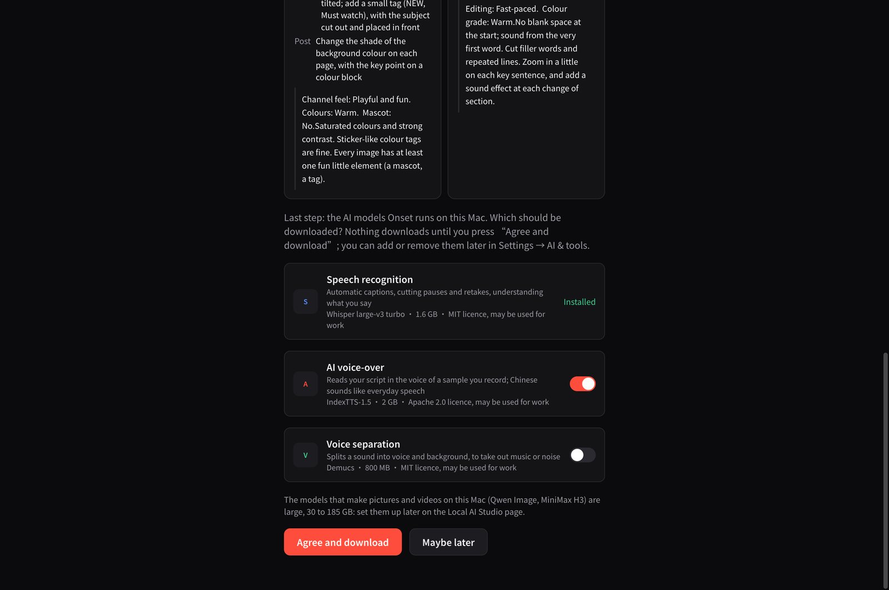
1-7 Switch AI, or sign in again
To change AI Onset's brain, or if the AI says it isn't signed in:
- Avatar at the top right → "Settings" → "AI & tools".
- The setup assistant is at the top: click another AI that says "Ready" to switch to it.
- If one isn't signed in, click "Sign in": Terminal opens, then sign in in the browser.
- Back in Onset, click "Check again".
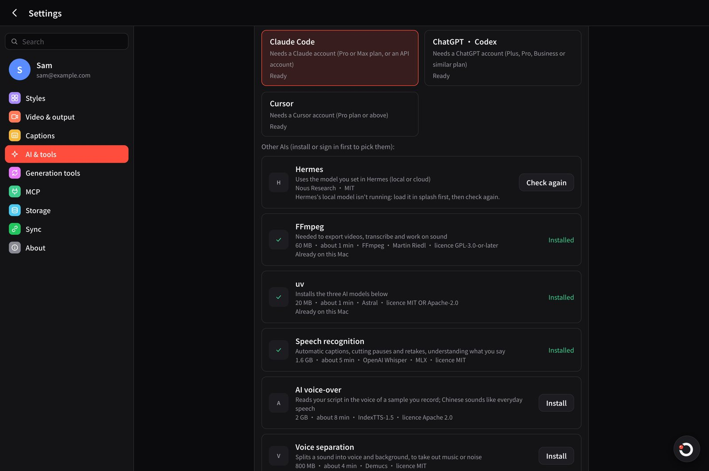
1-8 Sign in automatically when the app opens
Tired of picking your avatar and typing your password every time?
- Avatar at the top right → "Settings" → click your name at the top to open "Account".
- Under "Sign-in", turn on "Sign in automatically when the app opens".
- Turning it on asks for your password once.
This works on this device only. After you sign out, it stays out until the next time you open the app.
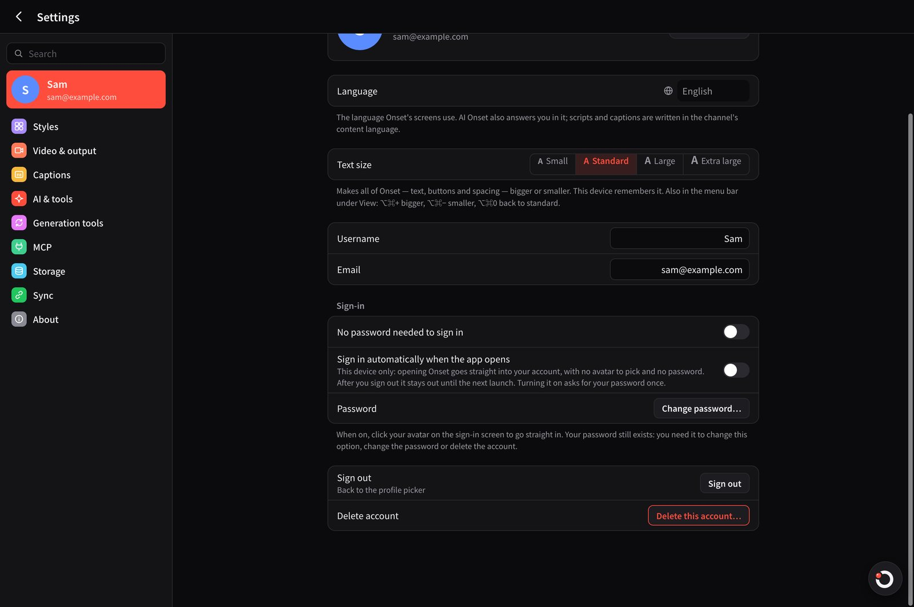
1-9 The account menu
Your avatar at the top right opens: Account, Settings, Language, Sign out.
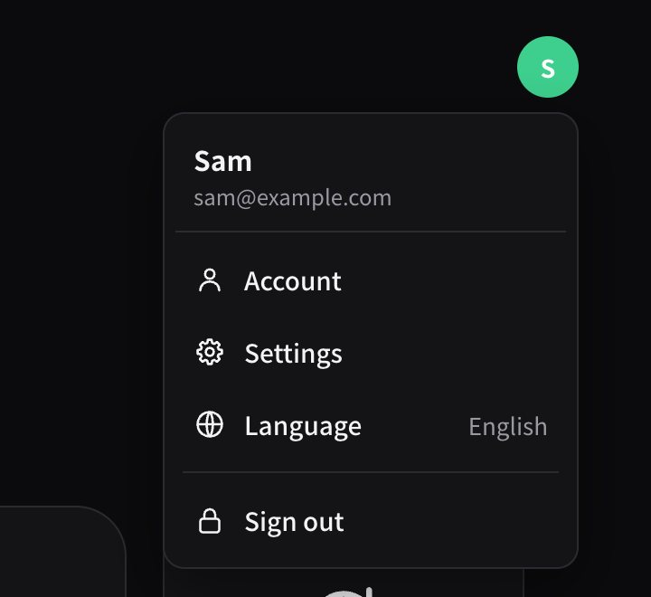
The six buttons on the home screen
After you sign in, the home screen has six big buttons. A video usually goes like this:
Write the script → Film → Edit → Make the cover and posts → Export
No time to film? Use "No shoot, just make it" (chapter 5) to turn a script straight into a video.
| Button | What it's for |
|---|---|
| Create Script | Write a new script, or have the AI write it |
| Content | All your videos, how far along each one is, covers and post captions |
| Recording | Film with the Mac or an iPhone, with a teleprompter |
| Editing | Cutting, captions, music, colour, export |
| Post Design | Image posts for Instagram, Facebook, Xiaohongshu (RED) and more |
| Local AI Studio | Make AI pictures and videos on this Mac (free; pictures use Qwen, videos use MiniMax H3, and the speed depends on your computer) |
The Onset logo at the top left always takes you back home.
2-1 Create Script
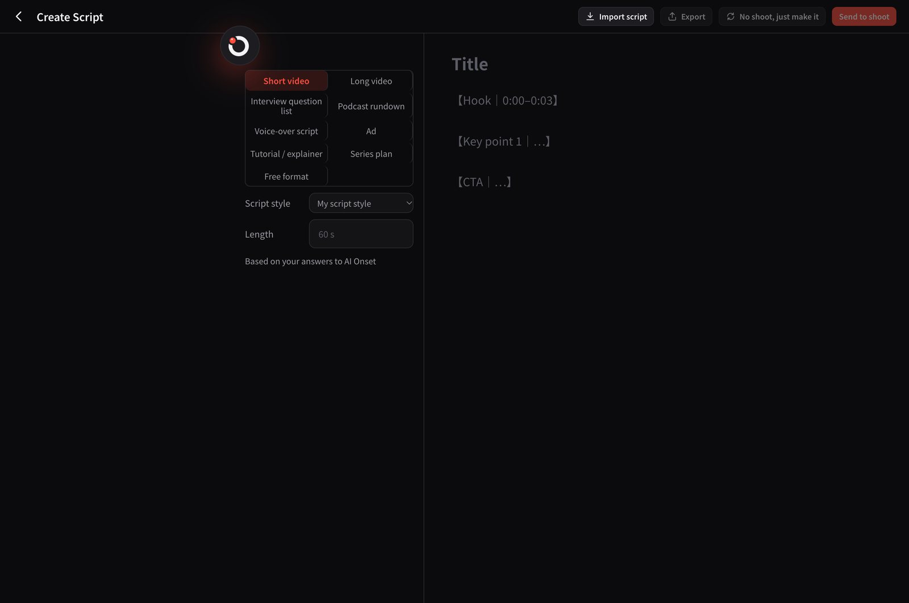
- In the middle, pick a format: Short video, Long video, Interview question list, Podcast rundown, Voice-over script, Ad, Tutorial / explainer, Series plan, Free format.
- Pick a "Script style" (the default is "My script style" from your answers) and a "Length".
- Type on the right yourself, or have the AI write it:
Have the AI write the script:
- Click the round AI Onset button at the top left to open the chat.
- Say in one sentence what this episode is about, for example "Write a 60-second short: three tips for better pour-over coffee at home".
- Send it (or press 🎙 and say it).
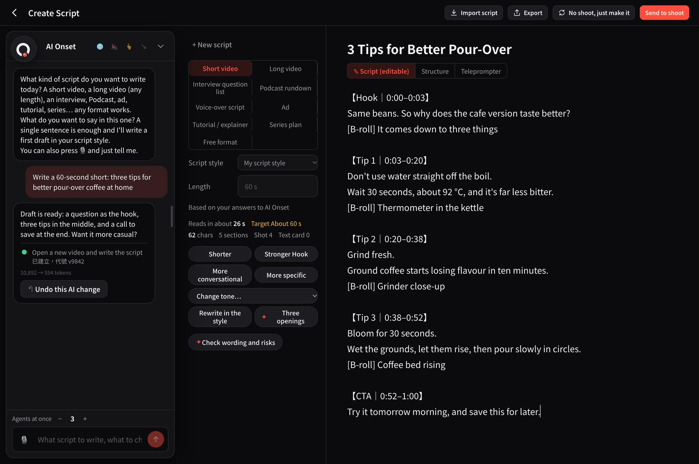
Once it's written:
- The buttons in the middle refine it: "Shorter", "Stronger Hook", "More conversational", "More specific", "Change tone…", "Rewrite in the style", "Three openings", "Check wording and risks".
- You'll see how long it takes to read, the target length, the character count and the number of sections.
- Three tabs above the script: "Script (editable)", "Structure", "Teleprompter".
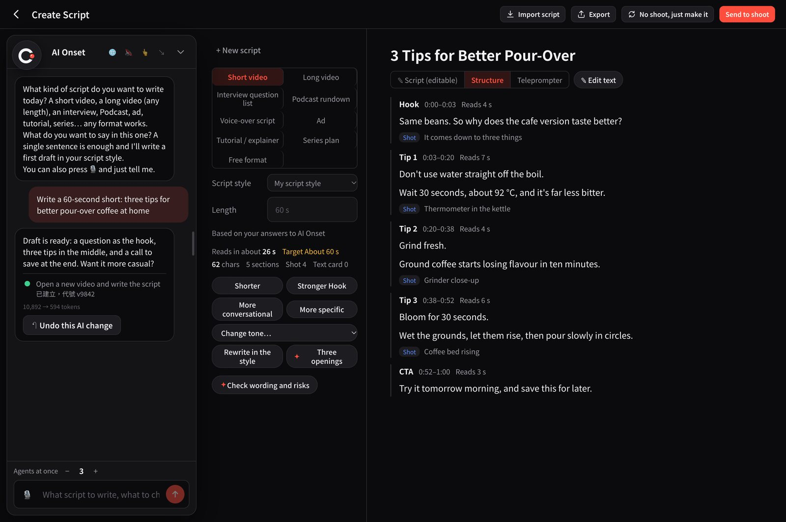
Top right:
- "Import script": use a file you've already written.
- "Export": PDF, Word, Markdown, plain text.
- "No shoot, just make it": turn it into a video without filming (chapter 5).
- "Send to shoot": take this script to Recording.
2-2 Content (videos and covers)
All your videos are here. Filter by stage at the top: Script, Shoot, Edit, Done, or by type: Long, Short, Posts.
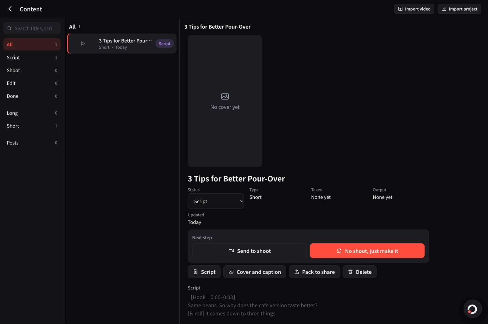
Click a video to see its status, takes and exports on the right, plus the "Next step" (for example "Send to shoot" or "No shoot, just make it").
Buttons below:
- Script: read or edit the script.
- Cover and caption: make the cover and write the post caption.
- Pack to share: package the whole project to give to someone else.
- Delete.
Making a cover
Inside "Cover and caption":
- Let the AI design one in your design style, or start from "Use a picture as the cover", an AI-generated picture, the "AI library", or "Start from a template".
- "AI write post caption" writes the text for your post.
- An AI log underneath shows what the AI did and how many tokens it used.
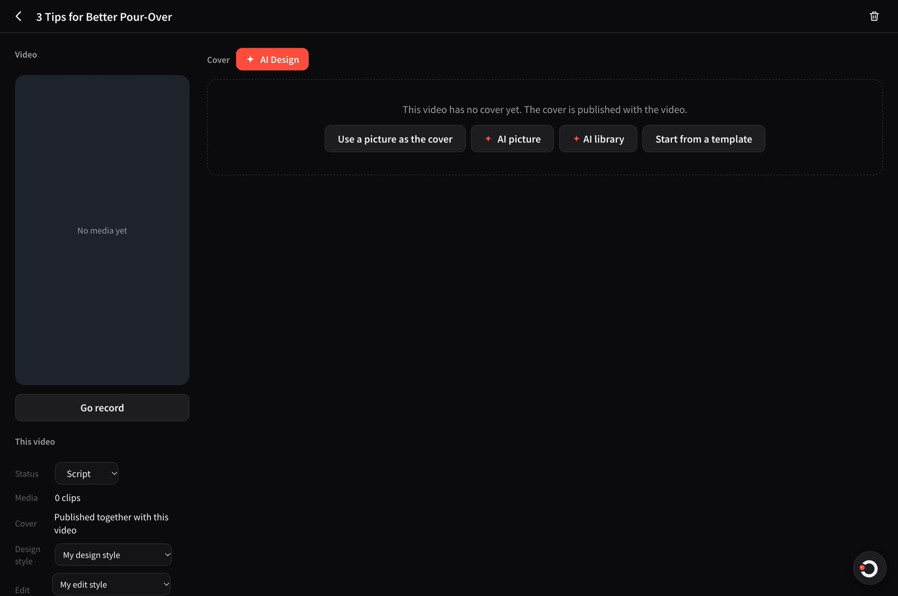
"Import video" at the top adds videos you've already filmed.
2-3 Recording (camera and teleprompter)
Click "Send to shoot" on a script, or Recording on the home screen.
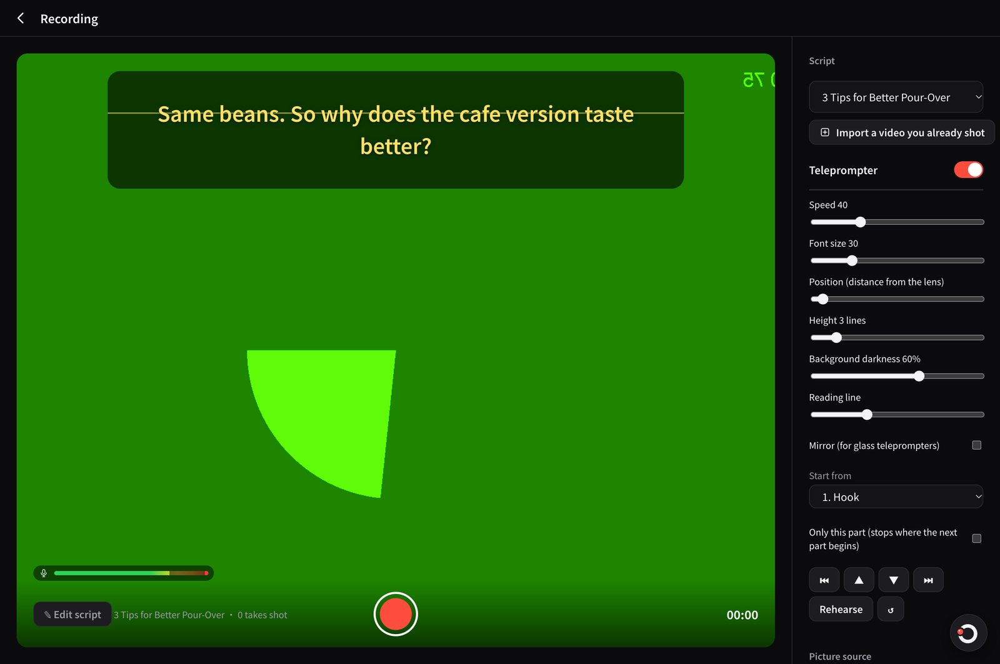
- On the right, under "Script", choose what to film (or "No script").
- The teleprompter text sits at the top of the picture. On the right you can adjust:
- Speed, Font size, Position (distance from the lens), Height, Background darkness, Reading line
- "Auto scroll" or "Follow voice": Follow voice listens to where you are and scrolls along.
- "Mirror": tick it for a glass teleprompter.
- "Start from": start at the Hook, Tip 1, and so on. "Only this part" stops where the next part begins.
- Click the red button in the middle to record.
Other useful settings:
- Countdown: count down 3 seconds before starting, with a beep each second if you like.
- Voice commands: say "start / stop / pause / resume / retake / next section / previous section".
- Remote: Bluetooth page turners and presenters work.
- Main sound: choose the Mac's microphone; with an audio interface, one track per input (one mic per person).
Already filmed with a camera or phone?
Click "Import a video you already shot" and choose the files. When you're done filming (or importing), click "Go to Editing" at the top right.
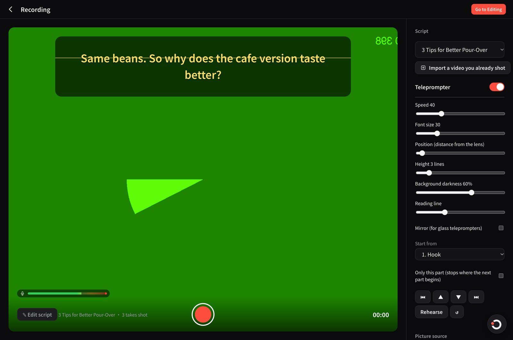
Use an iPhone as a camera
Under the picture source, "iPhone cameras": on the iPhone, open Recording in Onset → Settings → "Be the Mac's camera". Pair the phone first and use the same Wi‑Fi (see chapter 7). Ticked iPhones start and stop with the Mac, send their files back when done, and can be put together as a multi-camera podcast video.
2-4 Editing
Editing first shows the videos that are "In progress". Click one to start cutting, or click "New" for an empty 16:9, 9:16, 1:1 or Podcast project.
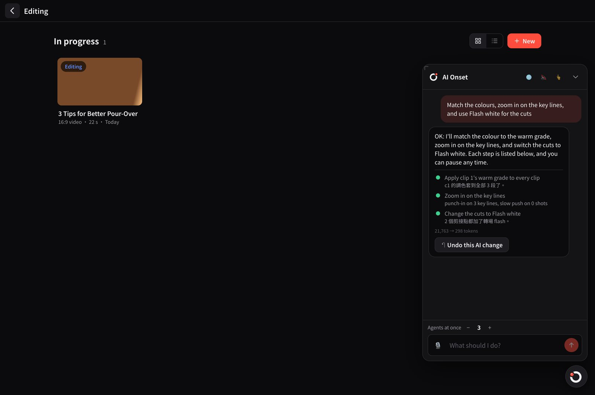
See chapter 3 for the details.
2-5 Post Design (image posts)
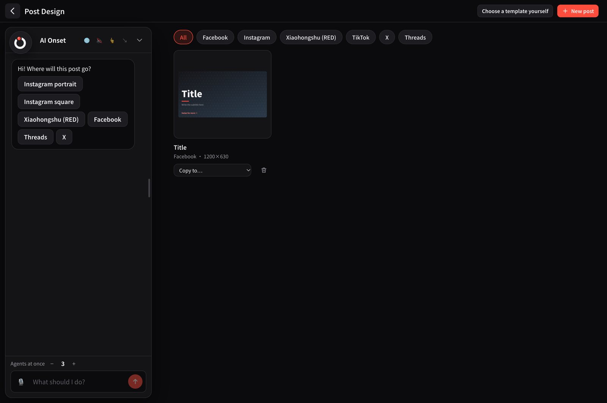
- Click "New post", or tell AI Onset on the left where the post will go. It asks a few questions (purpose, where the content comes from, how many slides, design style) and then designs it.
- In the editor:
- Left: platform and size, purpose, content source, slides, design style, then "Design from these" / "Redesign from these".
- Middle: edit right on the picture. Click to select, drag to move, pull a corner to resize, and double-click text to edit it. The toolbar adds "Text", "Add a picture", "AI picture", "AI library", "Shape".
- Right: Template, Layers, Background, Style, Check. Templates include a carousel (cover slide + one point per slide + an end slide).
- "Copy to another platform…" makes the other sizes for you.
- Click "Download" at the top right when it's ready. It saves automatically.
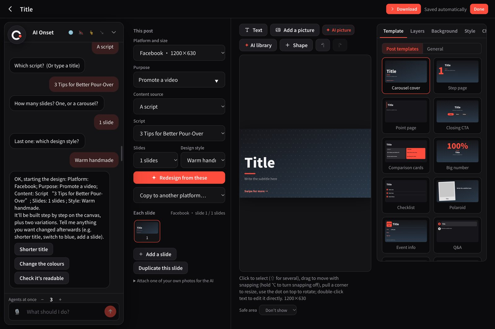
2-6 Local AI Studio (AI pictures and videos)
Make AI pictures and videos on this Mac: no cloud, no cost, but slower, and the models are big.
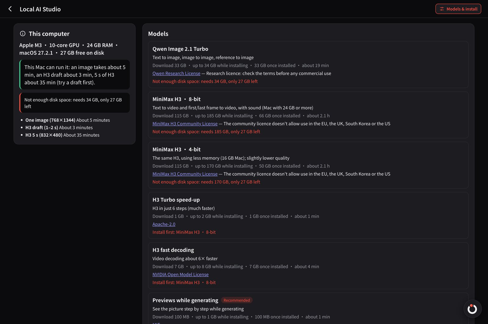
- The page first checks this computer (chip, memory, free disk space) and tells you what it can make and roughly how long it takes.
- Models:
- Qwen Image 2.1 Turbo: pictures. About a 33 GB download. - MiniMax H3 (8-bit or 4-bit): videos with sound. A 115 GB download, needing up to 185 GB free while installing.
- Local generation: pictures use Qwen, videos use MiniMax H3, and the speed depends on your computer.
- Each model only downloads after you agree to its licence and click "Install". Read the licence carefully (Qwen's is a research licence, for example: check it before using it for work).
- If the home button says "Pictures only", this Mac doesn't have the memory or disk space for the video model and can only make pictures. "Not enough disk space" means even the picture model doesn't fit yet.
- One Mac makes one thing at a time; the rest wait in a queue. You can stop a job. Finished pictures can be added to the reference library ("Add to reference library"), turned into a video ("Make a video from this"), or put in a video ("Put in a video…").
- Only for Macs with Apple Silicon (M-series chips).
Editing
3-1 The editing screen
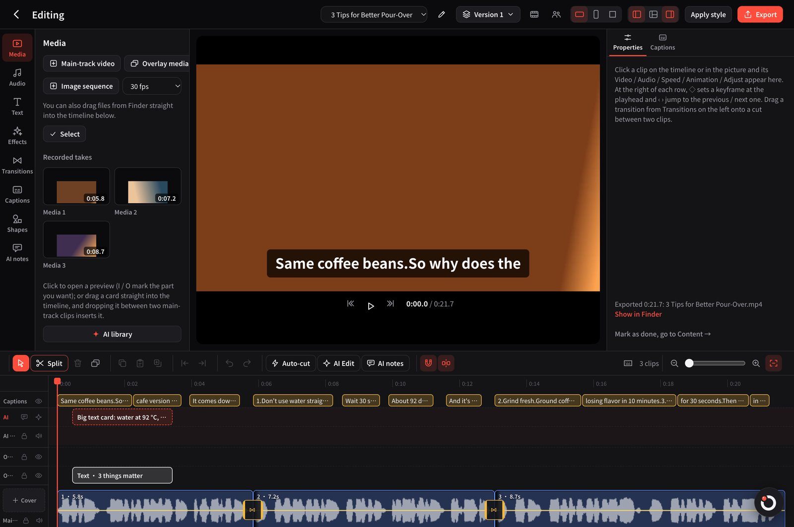
- Left: media and tools. Tabs: Media, Audio, Text, Effects, Transitions, Captions, Shapes, AI notes.
- Middle: the preview. Press ▶ to play.
- Right: properties. Click a clip and its settings appear here.
- Bottom: the timeline. Your video, laid out from left to right.
- Top bar: the video name, "Version", the shape (wide, tall, square), panel layout, "Apply style", "Export".
3-2 The rows of the timeline
From top to bottom:
| Row | What goes there |
|---|---|
| Captions | Automatic captions, one sentence per block |
| AI | AI note cards (notes to the AI, see 3-8) |
| Overlay | Things on top of the picture: text, images, picture-in-picture |
| Cover | This video's cover |
| Main track | The main video clips, end to end |
| Voice-over | Voice-over you recorded or the AI read |
| Music | Background music |
| Sound effects | Short sounds like a ding or a whoosh |
Each row has 🔒 on the left (lock it so nothing changes it) and 👁 / 🔊 (hide or mute it).
3-3 Basic cutting
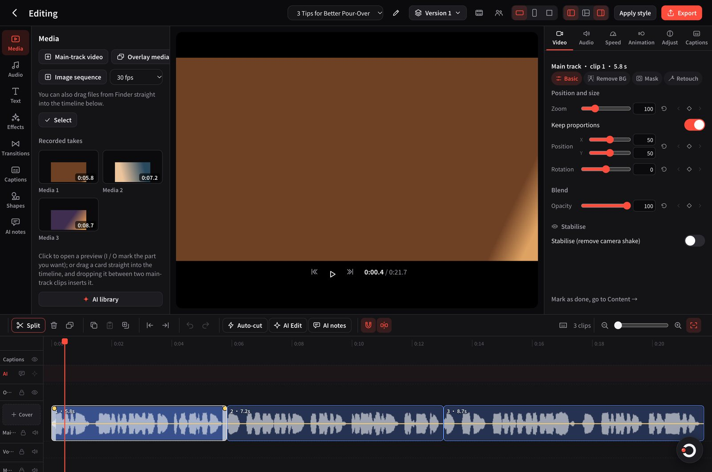
- Add media: under Media → "Recorded takes", drag a card onto the timeline. Drop it between two main-track clips to insert it. You can also drag files straight in from Finder.
- Pick a part first: click a card to open a preview, press I to mark the start and O to mark the end.
- Select: click a clip. The tabs Video / Audio / Speed / Animation / Adjust appear on the right.
- Cut (blade): press S (or the scissors "Split" button) to switch to the blade; a red dashed line follows the mouse. Click a clip or layer to cut it right there. It snaps to the playhead and clip edges; hold ⌥ to stop snapping.
- Back to selecting: press A, Esc, or click the arrow left of the blade. The select tool picks and drags clips.
- Cut at the playhead: press ⌘B. (On the iPhone, the "Split" button still cuts at the playhead.)
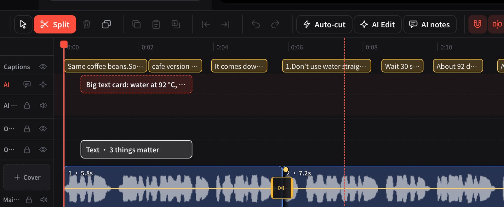
- Shorten: drag the left or right edge of a clip.
- Reorder: drag a clip to a new place.
- Delete: select it and click the bin.
- Undo: ↶ ↷ on the toolbar.
- The magnet on the toolbar is the main-track magnet: when it's on, clips close up with no gaps.
- The slider at the bottom right zooms the timeline (or pinch with two fingers on a Mac trackpad).
Let the AI cut for you
- Auto-cut: cuts out the pauses automatically. The version before it is kept as "Before Auto-cut".
- AI Edit: cuts the way you describe, for example "cut out the mistakes and the retakes". Long videos are done chapter by chapter.
Versions
Use "Version" in the top bar to save a copy before a big change. If it goes wrong, switch back to the old version.
3-4 Clip settings (the properties on the right)
- Video › Basic: position and size, scale, rotation, opacity, blend mode, "Stabilise (remove camera shake)".
- Video › Remove BG / Mask / Retouch: background removal, masks, skin retouching.
- Audio: volume, fades, voice enhancement, noise reduction.
- Speed: change the speed, or use a speed curve (montage, hero moment, bullet time…).
- Animation: entrance and exit animations.
- Keyframes: the ◇ at the right of each row sets a keyframe at the playhead; ‹ › jump to the previous or next one.
3-5 Text and typography
- Click "Text" on the left.
- Click a style ("Text" or one of the "Fly" animations) to add it at the playhead.
- In the preview, drag to move it, pull a corner to resize, and use the dot on top to rotate.
- Edit the words and the typography on the right under "Video › Basic".
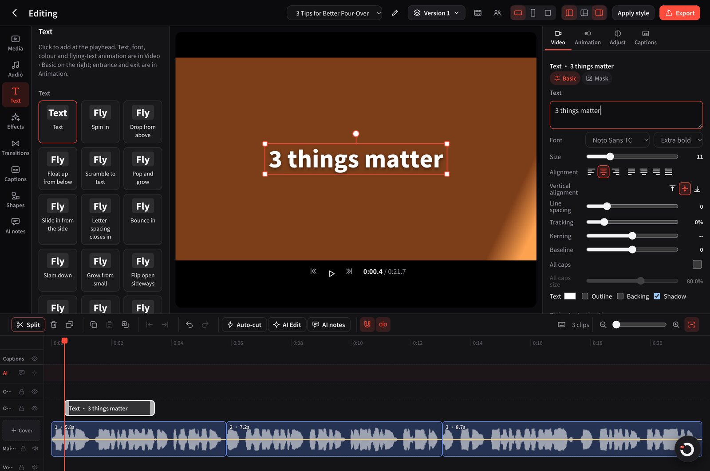
The typography panel has:
- Text
- Font (Noto Sans TC, Huninn, Iansui, Ming, Kai, Round…) and weight (Thin to Extra bold, with italics)
- Size
- Alignment (left, centre, right, justified) and Vertical alignment
- Line spacing, Tracking, Kerning, Baseline
- All caps and all-caps size
- Text colour, Outline, Backing, Shadow
- Flying text animation: over 40 kinds, such as "Spin in", "Scramble to text", "Bounce in", "Slam down". The whole block can move together, or one letter or word at a time.
3-6 Captions
- Click "Captions" on the left → "Transcribe (auto captions)".
- Wait a moment: the captions appear sentence by sentence on the Captions row.
- To fix a word, click the sentence in the "Sentences (click to edit)" list and type.
- Look, size, place, font and colour are in the Captions panel on the right.
- "Include captions on export" decides whether the captions are burned into the exported video.
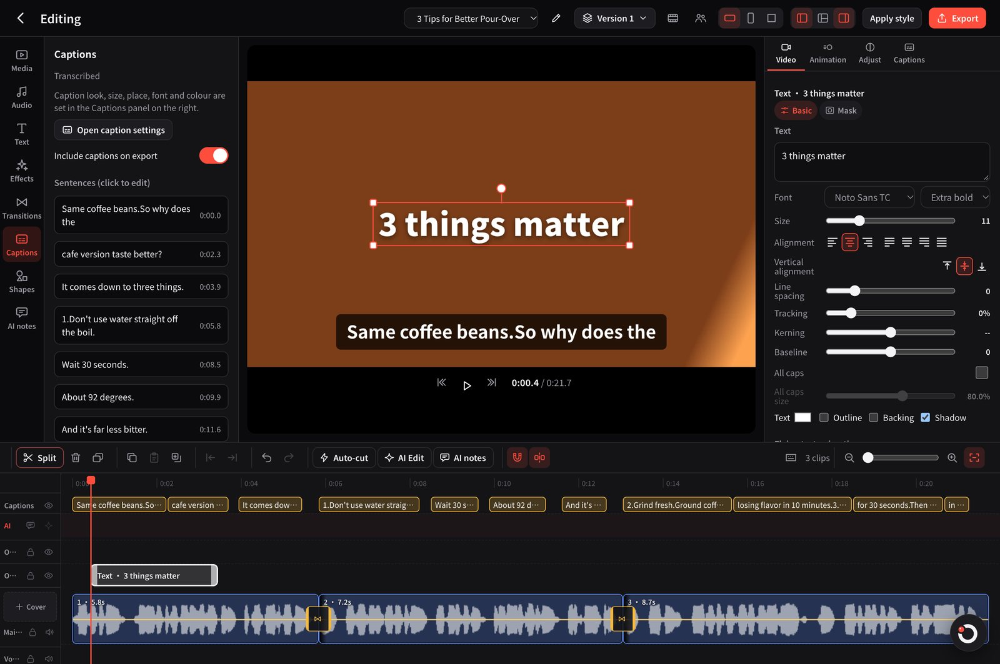
3-7 Sound: voice-over, music, sound effects
Click "Audio" on the left:
- "Record voice-over": record straight from your microphone.
- "Audio file": add your own music or sounds. They go on the Music row first; you can change them to voice-over or sound effects in the properties on the right.
- "AI voice-over": the AI reads your script (download a voice model first under Settings → AI & tools).
- Onset's built-in music and sound effects: all free, no credit needed. Press ▶ to listen and "Add" to put it at the playhead.
Music can duck (get quieter) automatically while someone is talking.
3-8 AI note cards
Want a graphic card or an animation without making it yourself? Leave the AI a note card:
- Click "AI notes" on the left → "AI note card". A card appears on the AI row at the top of the timeline.
- Drag it into place and stretch it over the seconds it should cover.
- On the right, write what this part needs, for example "Big text card: water at 92 °C, with a thermometer drawn next to it".
- Pick a "Tool": "Automatic (decided from the text)", Onset card, EffectCraft, Three.js, "Remove background (text behind the person)"…; the paid "Higgsfield (paid)" and "Theater (paid)", and "Cursor (pictures, your plan)" and "ChatGPT (pictures, your plan)", need a cloud service set up first (chapter 6).
- Click "Generate", or "Generate all" to make every note card at once.
What it makes goes on the rows under the note card. The note card itself never appears in the video. "Automatic" never picks a paid tool on its own, and a paid tool always shows a quote and asks before it does anything.
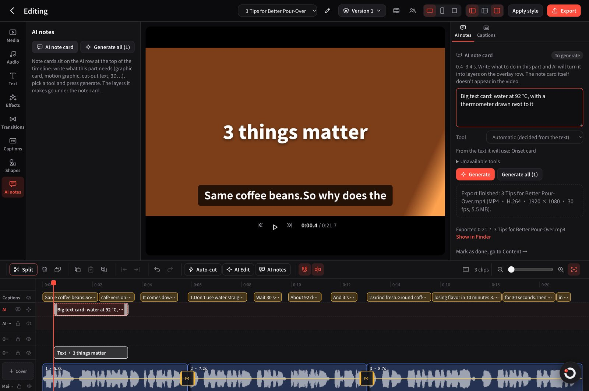
Give an AI note card reference pictures
Want the AI to follow the feel of a picture? Give the note reference pictures, up to 4:
- Drag pictures onto "Drag reference pictures here (or click to pick)" under the note's words, click there to pick files, or paste.
- Or drop a picture straight onto the AI note on the timeline (it becomes the note's reference, not a new layer).
- The ✕ on each picture removes it.
Theater, Cursor and ChatGPT make from the reference pictures. Higgsfield doesn't take reference pictures: only the AI writing the prompt sees them. To make from a picture, choose one of the others.
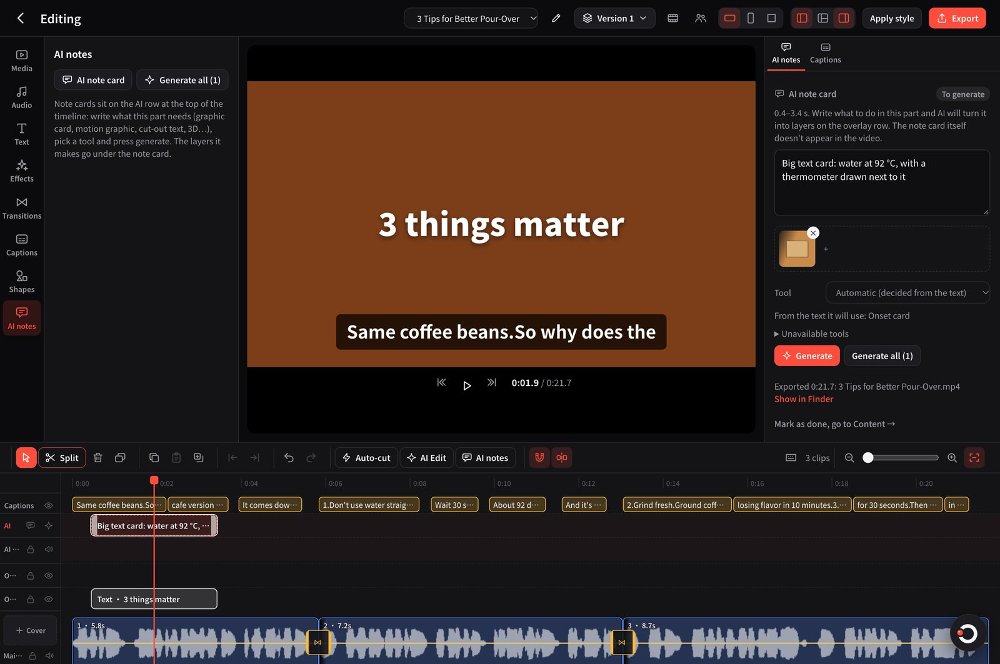
3-9 Transitions
- Click "Transitions" on the left.
- Drag a transition onto the cut between two clips. A small box appears on the cut.
- Drag the box's edge to change the length; select it and press ⌫ to remove it.
- To do every cut at once: "Add “Cross fade” to every cut" at the bottom. "Remove all" takes them all off.
There are 39 in five groups: Fade, Push, Wipe, Shape and Motion (for example Whip pan, Glitch, Flip).
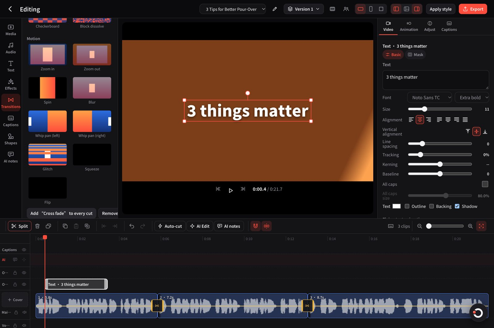
3-10 Colour
Select a clip → "Adjust" on the right:
- Adjust: start with a look (Original, Warm, Cool, Vivid, Soft, Film, Black and white), then fine-tune Exposure, Contrast, Saturation, Temperature and Tint.
- LUT: built-in Warm, Cool, Film, Teal & orange, Black & white, Vintage, High contrast, or "Import .cube file…".
- Curve and Colour wheels (shadows, midtones, highlights): for more control.
- HDR / Log conversion: turns iPhone HDR, Apple Log or Sony S-Log3 footage into normal colour.
- "Apply to all clips": grade one clip, match the rest. "Reset all" puts it back.
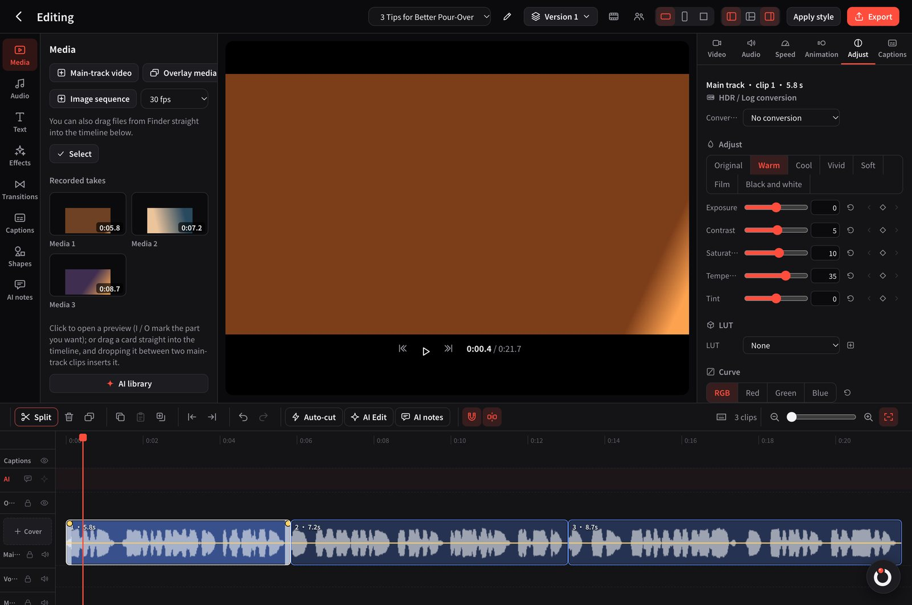
3-11 Export
- Click "Export" at the top right.
- The easiest way is a "Preset":
- YouTube (MP4 · 1080p)
- Reels / TikTok / Shorts (tall 1080×1920)
- Xiaohongshu (RED)
- Archive master (MOV · ProRes, very large files)
- Small file (for messaging, 720p)
- Audio only (MP3)
- To set it yourself, choose "Custom": format (MP4, MOV, MP3, WAV, AAC), codec, resolution, frame rate, bitrate, quality.
- Only need a part? Tick "Export only a part".
- Check "Save to":
- "Change…" picks another folder; "Show in Finder" opens the folder.
- Tick "Ask me where to save it and what to call it every time" to get a save window before every export.
- Click "Export". "Exporting xx%" shows at the top, and "Show in Finder" appears when it's done.
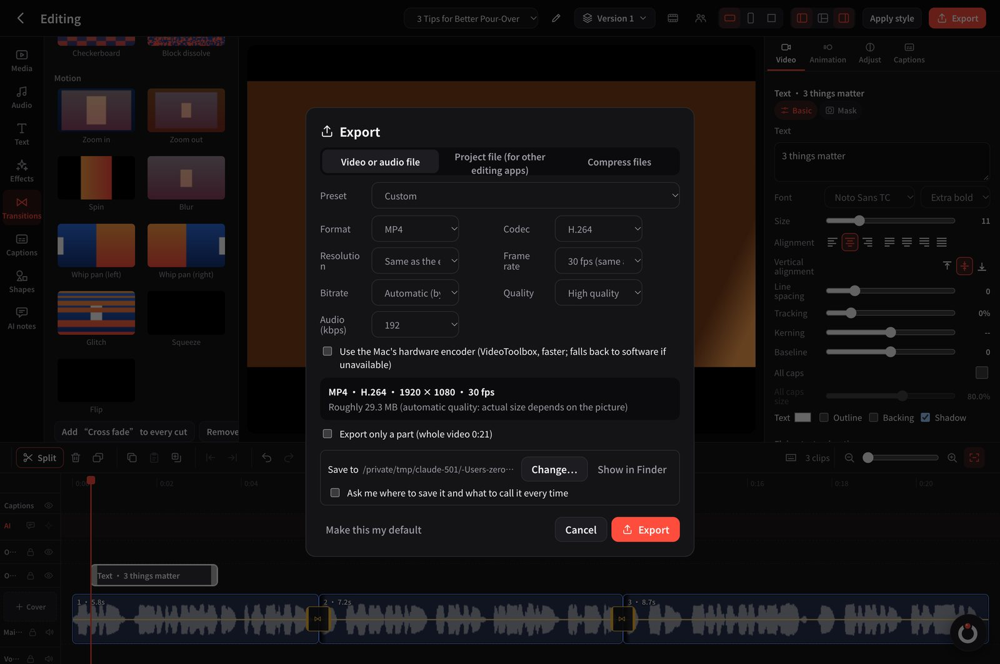
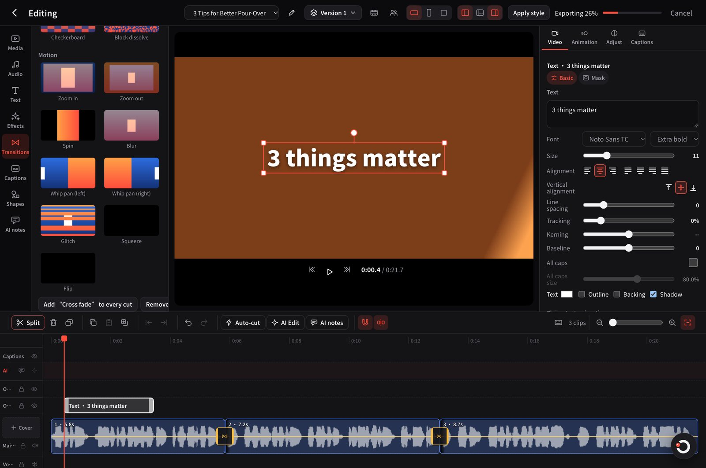
For other editing apps
The second tab of the export window, "Project file (for other editing apps)", saves for FilmCraft, a CapCut draft, Premiere / DaVinci (XML) or Final Cut Pro (FCPXML). Tick the option to copy the original files next to the project, and the whole folder can be moved or sent to someone else.
The third tab, "Compress files", makes smaller files.
AI Onset: let the AI do the work
4-1 How to call it
- Every time Onset opens, the round AI Onset button is in the bottom-right corner. Click it to open the chat.
- Or press ⌘J on any screen.
- Type, or press 🎙 to speak: "Hold to talk" sends when you let go, or click once and it sends after 2 seconds of silence.
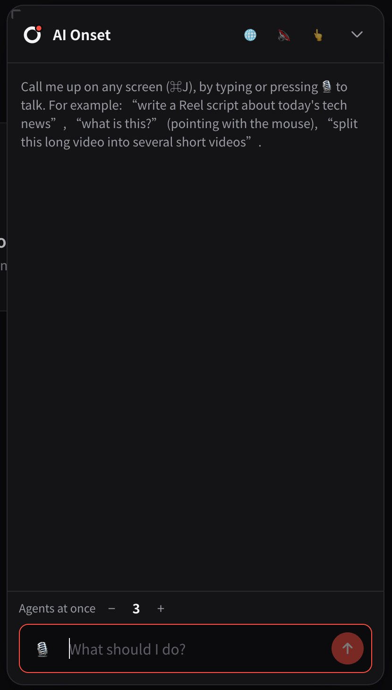
Things you can ask it, for example:
- "Write a Reel script about today's tech news"
- "Match the colours, zoom in on the key lines, and use Flash white for the cuts"
- "Split this long video into a few shorts"
- "What's this?" (press 👆 first, then click something on the screen)
4-2 Before making something new, it asks you
When you ask for new content (a new video, a script, No shoot, flying or kinetic text, a cover, a post, shorts from a long video), AI Onset first asks a few questions, one at a time, each with buttons:
- Style: your channel style, no style (go free), or something else (tell it which).
- Whether to generate pictures with AI: local AI (free but slower), cloud (uses credits), either (local first), or no generation (stock, animated cards, flying text).
- Length or shape if you haven't said (tall 9:16, wide 16:9, square 1:1).
- For No shoot: whether to add AI voice-over and music.
Click a button to answer, or type. It won't ask about anything you've already said. Don't want to answer them all? Click the "…your call on the rest" button and it decides the rest itself.
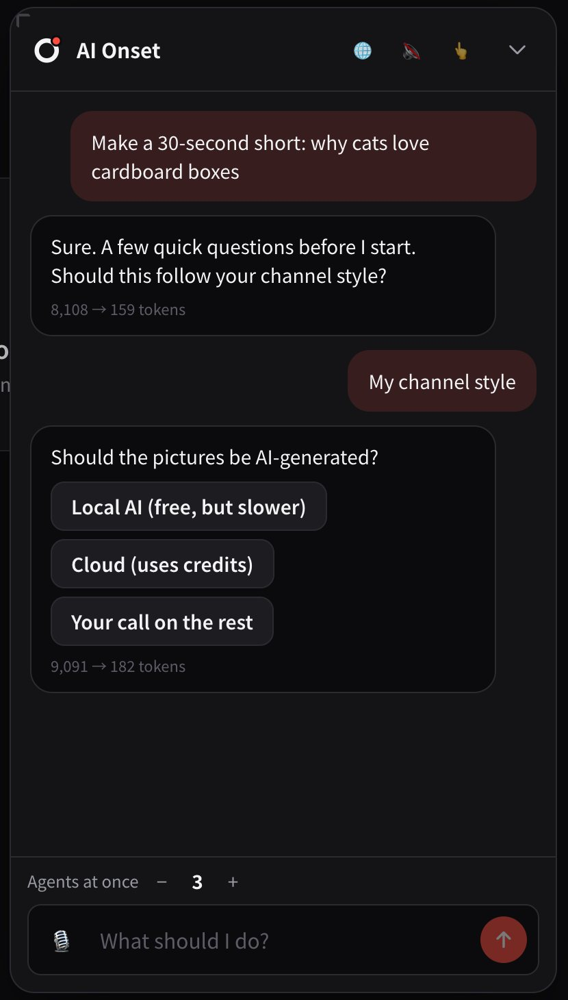
To skip your channel style, you can also just say "don't use my style this time". It keeps to that until you say "use my channel style" again.
4-3 Show it reference pictures
Want the AI to follow the feel of a picture?
- Drag pictures onto the AI Onset chat, or onto the round button in the corner.
- Or copy a picture and press ⌘V in the chat.
The pictures appear above the box (the ✕ removes one) and go to the AI with your next message as references.
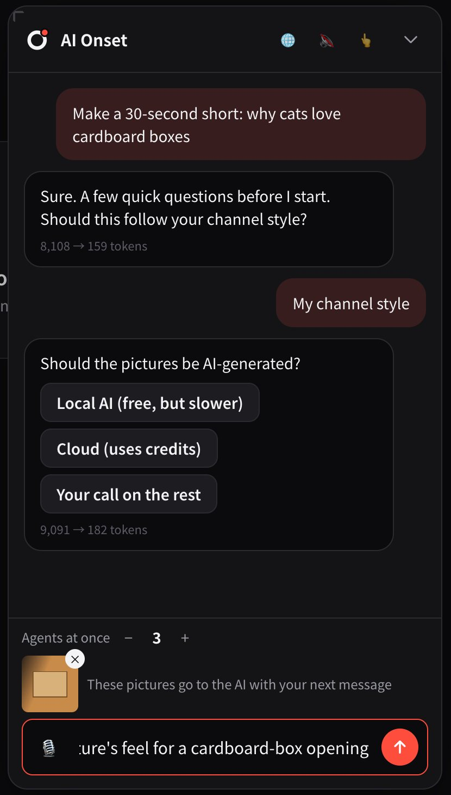
To give one AI note card its own reference pictures, see chapter 3, 3-8.
4-4 The small icons at the top
| Icon | Meaning |
|---|---|
| 🌐 | Whether it can search the web. Click to switch: search automatically when needed → can search every time (🌐!) → off |
| 🔇 / 🔊 | Whether answers are read aloud |
| 👆 | "Point": click anything on the screen to ask about it (or ⌥⇧-click) |
| ↘ | "Back to corner": tuck the chat back into the corner (only when it sits next to the editor) |
4-5 You can see every step
When you ask it to do something, the chat lists every step it will take. Each finished step gets a green dot and a note of what it did.
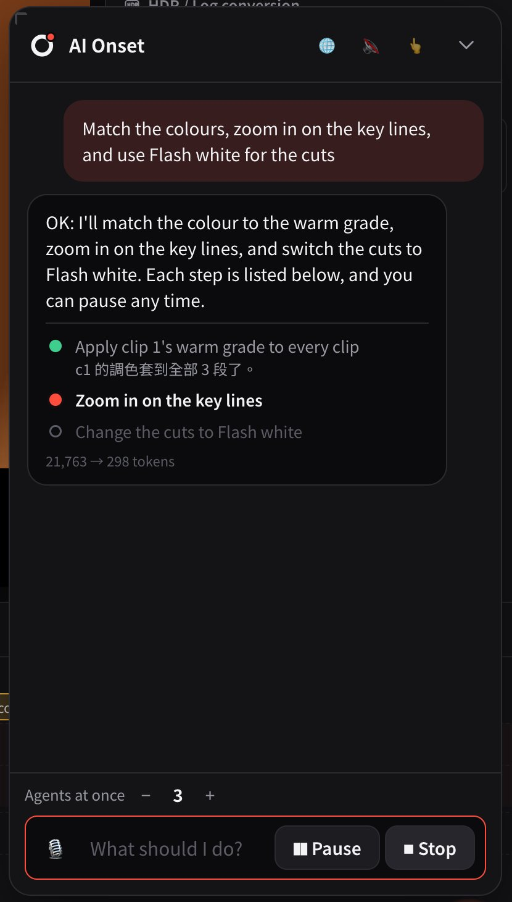
- While it works, "Pause" and "Stop" sit at the bottom; use them any time. After pausing, press "Resume".
- When the chat is folded away, a small status bar shows "Onset is doing: …", also with pause and stop.
- The timeline and the picture change as it goes, so you can watch it edit.
- When it's done, "↶ Undo this AI change" appears. Not happy? One click takes it all back.
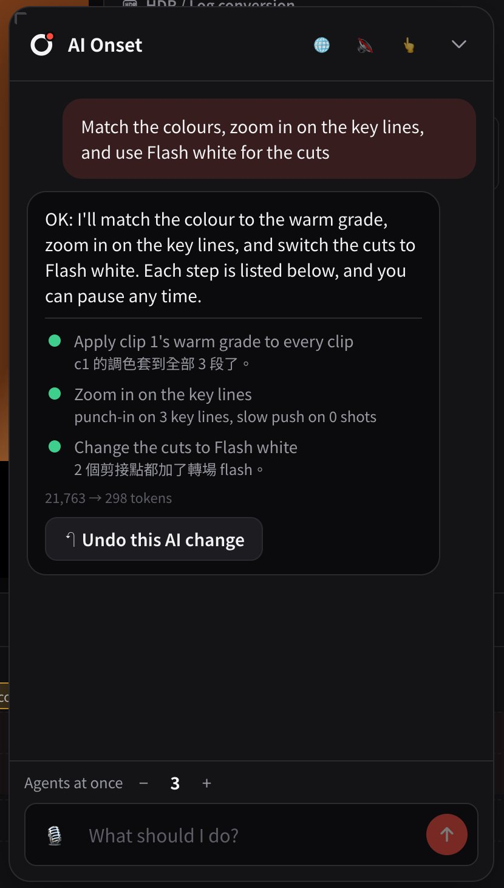
4-6 Agents at once
Under the chat there's "Agents at once − 3 +".
- Agents are AI helpers working at the same time. More agents finish big jobs faster (such as "No shoot, just make it" for a whole video), but keep the computer busier.
- You can set 1 to 10. Onset checks what this computer can handle and tells you if it can only take fewer at once.
- When several agents are working:
- Coloured bands above the timeline show which part each agent is working on ("name · step"). - Each agent has its own coloured cursor that flies to whatever it's changing: a clip, the Captions row, the Music or Voice-over row, the AI row, or the preview when it's grading colour. - "Pause all", "Resume all" and "Stop all" control them together, and each one can be stopped on its own.
4-7 Change AI Onset's brain
AI Onset can use any of these four as its brain: Claude Code, ChatGPT · Codex, Cursor, Hermes. Choose it at the top of Settings → AI & tools (the setup assistant). Which ones need an account, and how to sign in: see chapter 1, 1-4.
- Only AIs that are installed and ready can be chosen.
- If the chosen AI can't do something (Cursor can't search the web or look at pictures, for example), Claude Code answers instead and the screen says so; if Claude Code isn't available either, it tells you it can't be done.
4-8 Let an outside AI use Onset (advanced)
Settings → MCP can "Let outside AI work inside Onset", for example so Claude Desktop or Claude Code can drive Onset directly. Every step an outside AI takes also shows in AI Onset, marked "🔌 outside AI", and can be stopped the same way. An outside AI can't film, delete or publish.
No shoot, just make it
No time to film, or a subject you simply can't film (like a rover on Mars)? If you have a script, Onset can make the whole video: voice-over, flying text, text cards, web footage, generated pictures and videos, plus captions, all laid out on the timeline in one go.
You can watch it work, stop any time, and undo it all at once when it's done.
5-1 Where to start
- "No shoot, just make it" at the top right of Create Script.
- In Content, pick a video and use "No shoot, just make it" under "Next step".
- Or just tell AI Onset: "Don't film this one, make it into a video". It first asks, with buttons, about style, AI generation, length and shape, and voice-over and music (see chapter 4, 4-2).
5-2 Choose how to make it
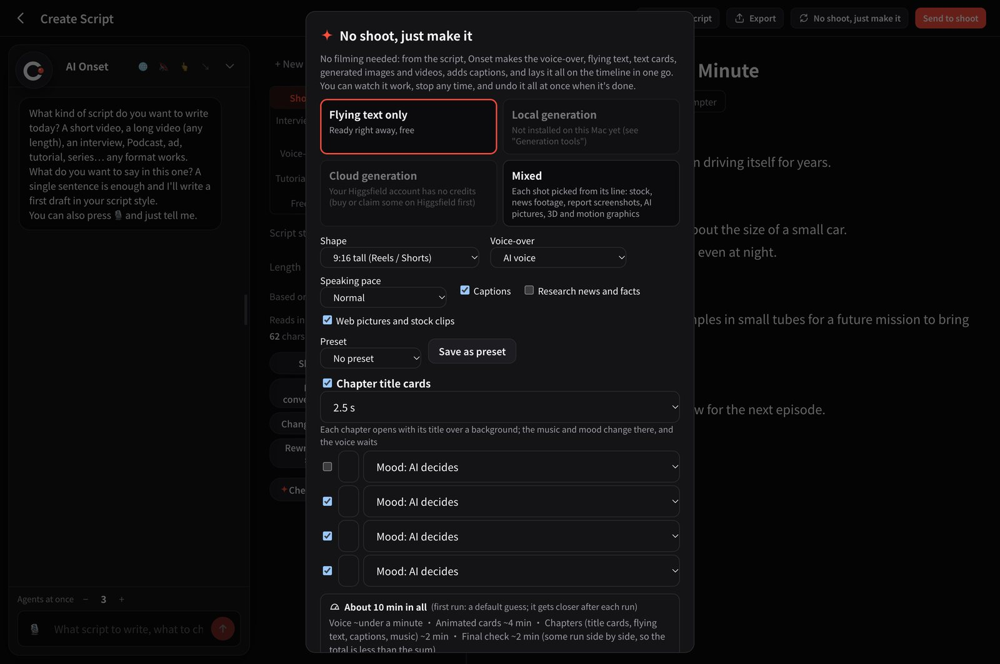
Pick one of the four big buttons at the top:
| Option | What it means |
|---|---|
| Flying text only | Ready right away, free. The picture is text animation and cards |
| Local generation | Made on this Mac, free: pictures use Qwen, videos use MiniMax H3, and the speed depends on your computer |
| Cloud generation | Made with Higgsfield or Theater. Costs money, with a quote first |
| Mixed | Each shot picked from its line: stock, news footage, report screenshots, AI pictures, 3D and motion graphics |
Options you can't use are greyed out with the reason (for example "Not installed on this Mac yet" or "no credits").
Then set:
- Shape: 16:9 wide (YouTube), 9:16 tall (Reels / Shorts), 1:1 square.
- Voice-over: AI voice, or no voice-over.
- Speaking pace: tight, normal, slow.
- Tick boxes: "Captions", "Research news and facts", "Web pictures and stock clips", "Flying text on every shot".
- Agents at once: more is faster (see chapter 4).
- Chapter title cards: each chapter opens with its title over a background, and you can set each chapter's mood (tense, curious, moving, calm, reflective).
- Settings you use often can be saved with "Save as preset".
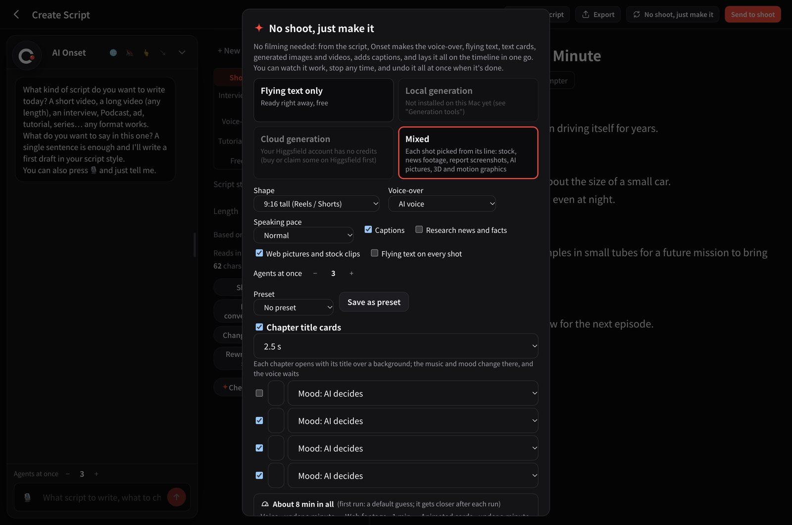
5-3 Check the time and the shot list
Scroll down:
- Time estimate: "About X min in all", with each stage (voice, web footage, animated cards, local generation, cloud generation, final check). The first run uses a default guess; it gets closer after each run.
- Shot list: one line per shot, with its line of script, its length and what it's made with.
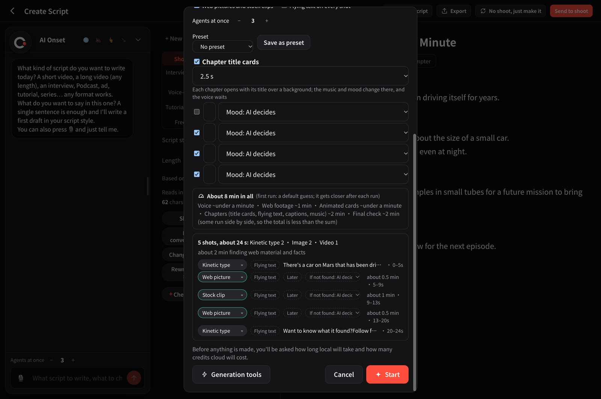
5-4 Where each shot comes from
The button at the left of each line changes what the shot is made with:
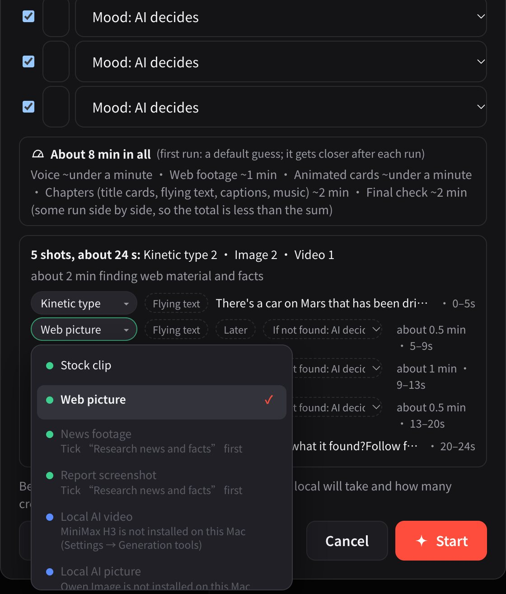
| Source | What it is |
|---|---|
| Stock clip | Free stock video from the web |
| Web picture | A picture from the web whose licence allows it |
| News footage / Report screenshot | News video, or a screenshot of a news page (tick "Research news and facts" first) |
| Local AI video / picture | Made on this Mac with MiniMax H3 / Qwen Image |
| Higgsfield cloud clip / picture | Made with your Higgsfield account (uses credits) |
| Theater cloud clip / picture | Made with your Theater account (quoted first) |
| Cursor picture / ChatGPT picture | A picture made on your Cursor or ChatGPT plan (no price per picture, asks first; add them to the cloud list first, see chapter 6) |
| 3D animation | A 3D animation |
| Animated card | An information card that moves |
| Motion graphic | A motion graphic made with EffectCraft |
| Kinetic type | One big word per beat, background colours flipping, camera pushes and whips |
| Card | A still card |
Each line also has:
- "Flying text": whether text goes on top of the picture.
- "First / Later": important shots get made first.
- "If not found:": what to do when nothing suitable turns up on the web (AI decides, free stock, 3D animation / motion graphic, AI picture, animated card).
5-5 The main subject's reference picture
If the script has a main subject with a fixed look (a particular rover, your product), every AI picture should show it the same way. Onset handles this for you:
- The AI finds up to 3 main subjects in the script.
- It looks for real photos on the web whose licence allows it, cuts out the background and saves them in Local AI Studio's reference library, named "Reference: name".
- From then on, AI pictures, local videos and Theater generations all draw from that reference.
To swap or delete one, go to the reference library in Local AI Studio. The next video on the same subject reuses it.
5-6 Local time limit
With "Local generation" or "Mixed", there's an extra "Local limit": 10, 30, 60 or 120 minutes.
With local generation, pictures use Qwen, videos use MiniMax H3, and the speed depends on your computer. When the time runs out, any shots not made yet automatically become animated cards instead of waiting. If this Mac is busy with another local job, it uses animated cards straight away too.
5-7 Anything paid asks first
The bottom of the window says: "Before anything is made, you'll be asked how long local will take and how many credits cloud will cost."
- Higgsfield: a quote in credits first ("…credits in all, spend them?"). Say no and those shots become flying text instead.
- Theater: an estimate first ("about US$…, go ahead?").
- Cursor / ChatGPT: no price; it uses your plan's usage, and still asks whether to make them first.
5-8 Starting, and after it's done
- Click "Start".
- You can go and do something else. The AI works in the background, chapter by chapter: as soon as a chapter's voice-over is read, that chapter's animation, flying text, captions and music start.
- Everything lands on the editing timeline, just like your own edit, so you can keep changing it.
- To start over, tell AI Onset "redo it". The old edit is saved first as a version called "Before redo" with the date.
- Closed Onset halfway through? No problem: next time you open Editing it asks "Go on" or "No thanks".
One voice-over line came out wrong?
Every voice-over line is its own clip. On that line, click "Speak line #n again". It's read again in the same voice, and the clips and captions after it move to fit.
Cloud generation: Higgsfield and Theater
Local generation is free but slow, and some Macs can't run the video model at all. Cloud generation uses your own cloud account to make pictures and videos on someone else's computers. It's much faster, but it costs money.
Onset works with four services: Higgsfield and Theater, plus Cursor and ChatGPT for pictures only. You can add them all, and choose which one to use for each shot.
6-1 Add a cloud service
- Avatar at the top right → "Settings" → "Generation tools", then scroll down to "Cloud generation". (The "Generation tools" button at the bottom left of "No shoot, just make it" brings you here too.)
- Click "＋ Add a cloud service" and pick Theater, Higgsfield, Cursor or ChatGPT. (Cursor and ChatGPT have to be added here by hand.)
- Click "Sign in to Theater" or "Sign in to Higgsfield":
- Theater: nothing to install. The Theater sign-in page opens in your browser.
- Higgsfield: install Higgsfield's small command-line tool first (the page shows the one-line install command; a tech-savvy friend can paste it into Terminal), then click "Sign in to Higgsfield" and sign in in the browser.
- Back in Onset, click "Check again". When it says signed in, you're set.
Onset never sees or stores your password: you sign in in the browser.
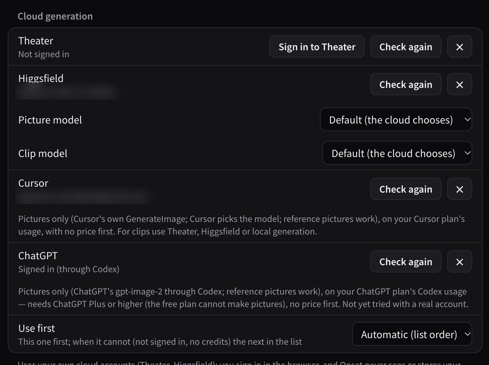
To stop using one, click the ✕ on its line ("Remove from the list").
6-2 Which one goes first
"Use first":
- Automatic (list order): use the one at the top of the list; if it can't be used (not signed in, no credits), use the next one.
- Or pick a specific service.
6-3 Choose the model and resolution
Once you're signed in, each service shows:
- "Picture model" and "Clip model": the default is "Default (the cloud chooses)", or pick one yourself.
- After you pick a model, you can choose its "Resolution". Higher resolution usually costs more.
6-4 Higgsfield credits vs. Theater quotes
| Higgsfield | Theater | |
|---|---|---|
| How you pay | With credits in your account (buy or claim them on Higgsfield first) | By the quote each time, charged to your Theater account |
| Can Onset see your balance? | Yes, e.g. "Signed in (plan, N credits)" | No, check your Theater account |
| What it asks before starting | "…credits in all, spend them?" | Videos: "about US$…, go ahead?"; pictures: Theater quotes first |
| If you say no | Those shots become flying text | Nothing is made |
Neither one spends money until you agree.
6-5 Cursor and ChatGPT: pictures on your own plan
If you already pay for Cursor or ChatGPT, you can use them to make pictures too:
- Pictures only, no video. For video, use Theater, Higgsfield or local generation.
- Reference pictures work (chapters 3 and 4).
- It uses your plan's usage, with no price per picture. Before making anything it asks whether to use your Cursor (or ChatGPT) plan, and only goes ahead when you click "Make with Cursor" or "Make with ChatGPT". If you say no, those shots become flying text.
- Cursor: uses your signed-in Cursor account (install and sign in to Cursor in Settings → AI & tools).
- ChatGPT: goes through Codex with your ChatGPT account, and needs ChatGPT Plus or higher (the free plan can't make pictures). When your usage is used up, Onset tells you when you can make pictures again.
Once they're on the list, you can choose them:
- No shoot, just make it: set a shot's source to "Cursor picture" or "ChatGPT picture" (chapter 5).
- AI note cards: set the "Tool" to "Cursor (pictures, your plan)" or "ChatGPT (pictures, your plan)" (chapter 3).
- AI Onset: just say "draw this one with ChatGPT".
6-6 Where cloud generation is used
- No shoot, just make it: choose "Cloud generation" or "Mixed", or switch a shot in the shot list to "Higgsfield cloud clip", "Theater cloud picture" and so on (chapter 5).
- AI note cards: pick "Higgsfield (paid)" or "Theater (paid)" as the "Tool". Generating shows a quote first, then asks whether to go ahead (chapter 3).
- When the tool is chosen "Automatically", it never picks a paid one.
Reference pictures
For reference pictures given to an AI note card or to AI Onset (chapters 3 and 4): Theater, Cursor and ChatGPT make from them; Higgsfield doesn't take them, and only the AI writing the prompt sees them. To make from a picture, choose anything but Higgsfield.
The iPhone app and sync
Onset also comes for iPhone and iPad. Once the phone is paired with your Mac, videos, scripts, timelines and posts sync both ways.
7-1 What the phone can do
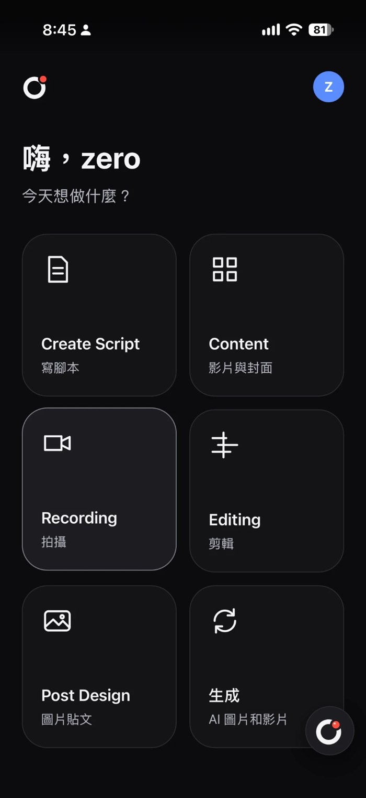
Like the Mac, the phone's home screen has six buttons: Create Script, Content, Recording, Editing, Post Design, and a sixth one for AI pictures and videos (「生成」, "Generate"). The round AI Onset button sits in the bottom-right corner here too.
On the phone itself:
- Import videos and photos (from Photos, the camera, or Files)
- The whole editor: cut, split, trim, reorder, captions and their look, transitions, layers, music and voice-over, colour
- Speech to text (with Apple's speech recognition)
- Export 9:16 or 16:9 MP4 (saved to Files → Onset and to Photos)
- Recording, with the teleprompter
- Image post design
- AI pictures: browse what the Mac made; draw with Apple's Image Playground; or have the AI write a prompt for ChatGPT / Gemini / Grok, follow the steps to make it there, and import the result (Onset doesn't pay for any of it)

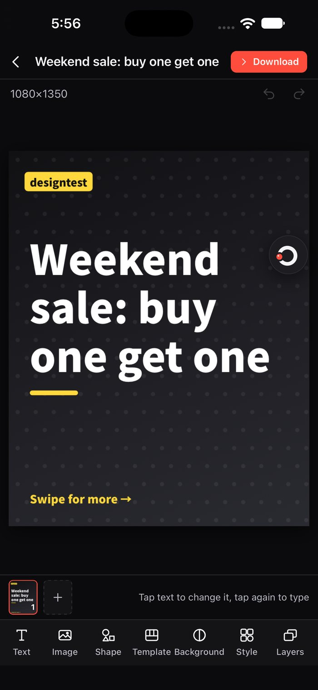
Needs the Mac (the phone hands it over):
- Most AI Onset actions, and AI Edit
- Very long videos, multi-camera podcasts
- Background removal, masks, retouching, voice tools, HDR conversion
- Other export formats
- Local AI generation
For anything the phone can't do, tap "Hand to Mac". The request stays with the video, and the Mac sees it once they connect.
With no network at all, editing and exporting still work.
7-2 Pair with your Mac
The first pairing needs the same Wi‑Fi, with Onset open on the Mac.
On the Mac:
- Avatar at the top right → "Settings" → "Sync".
- Under "Sync on this Mac", click "Turn on".
- Under "Let phones connect", click "Turn on".
- Under "Pair a phone", click "Show QR code".
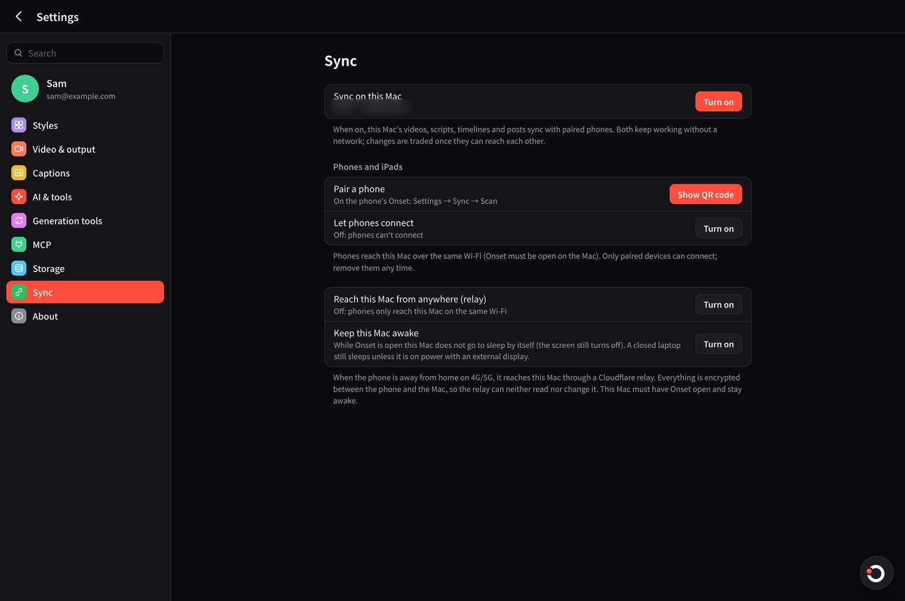
On the iPhone:
- On the first screen, tap "Pair with your Mac" (or Settings → Sync).
- "Scan the QR code on the Mac".
That's it. You won't need to scan again. To remove a phone, do it in Settings → Sync on the Mac.
7-3 How sync works
- Works offline: every device keeps all its data. Without a network both keep working, and they trade changes when they can reach each other.
- Changed the same thing on both? If a script or timeline was changed on both sides, both are kept (the other timeline shows up under "Version").
- Video files: the phone first gets 720p preview copies, which edit more smoothly. To export at 1080p, tap "Download originals". Videos filmed on the phone go to the Mac as originals.
- AI library: pictures and videos made by Local AI on the Mac sync to the phone. Small previews come first; the full file downloads when you open it. Things made on the phone go back to the Mac too.
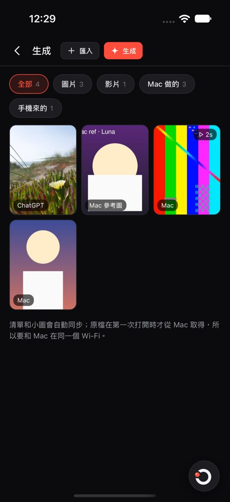
7-4 Reach the Mac from anywhere (relay)
Away from home on 4G / 5G, the phone can still reach your Mac at home:
- "Reach this Mac from anywhere (relay)" turns on by itself after you pair your first phone. You'll see it in Settings → Sync on the Mac.
- The phone connects through Onset's relay. Everything is encrypted between the phone and the Mac, so the relay can neither read nor change it.
- The phone shows "At home (direct)" or "Away (through the relay)".
- Away from home, only projects, scripts, covers and posts sync. Big video files wait until you're home on the same Wi‑Fi.
- The Mac at home must have Onset open and stay awake. Turn on "Keep this Mac awake". A closed laptop still sleeps (unless it's on power with an external display).
7-5 The iPhone as the Mac's camera
For podcasts and interviews, iPhones can be the Mac's second and third cameras:
- On the iPhone, open Recording in Onset → Settings → "Be the Mac's camera".
- On the Mac's Recording page, under the picture source, tick this iPhone in "iPhone cameras".
- Press record on the Mac: both start and stop together.
- The files come back to the Mac automatically, one per camera, lined up by sound, and put together as a multi-camera video.
This needs the same Wi‑Fi; it doesn't go through the relay.
FAQ
Where are my exported videos?
In this order:
- The folder you picked with "Change…" in the export window.
- If you never picked one: the "Export" folder inside your media folder (Settings → Storage).
- If neither is set: Movies → Onset.
The quickest way: click "Show in Finder" after exporting. Or go to Settings → Video & output → "Open folder".
Want to decide every time? Tick "Ask me where to save it and what to call it every time" in the export window. If the folder you picked is gone (for example the external drive is unplugged), Onset saves to the default place instead.
AI Onset isn't answering?
- Quit Onset and open it again. That fixes most problems.
- Go to Settings → AI & tools and check:
- AI-helper should say "Running". If the AI says AI-helper isn't running, reopen Onset.
- The AI chosen at the top (Claude Code, ChatGPT · Codex, Cursor or Hermes) should say "Ready". If it isn't signed in, click "Sign in" and follow Terminal to sign in in the browser (see chapter 1).
- With a local Hermes model, the model has to be loaded first, and it's slower; how slow depends on your computer.
- Click "Check again". Once AI-helper is back, Onset reconnects by itself; no need to reload.
- During a big job (like "No shoot, just make it") the AI may be busy in the background. Check whether the chat or the status bar says it's working on something.
Local AI is slow?
With local generation, pictures use Qwen, videos use MiniMax H3, and the speed depends on your computer. And one Mac makes one thing at a time; the rest wait.
Things that help:
- Try a "draft" first (Local AI Studio has draft options that are much faster).
- In "No shoot, just make it", switch some shots to web pictures, stock clips or animated cards.
- Set a "Local limit": when time's up, the rest become animated cards.
- Install "H3 Turbo" and "H3 fast decode" (in Settings → Generation tools).
- In a hurry, use cloud generation (chapter 6, costs money).
The voice-over is stuck, wrong, or missing?
- One line sounds wrong: on that line, click "Speak line #n again".
- It says no voice-over was added: usually the voice model isn't downloaded yet, or AI-helper isn't answering. Follow its instructions (Settings → AI & tools → voice models for AI voice-over), then try again.
- In the preview, the voice-over drifts from the picture or keeps replaying: that was a problem in older versions and is fixed in the latest one. Please update Onset. Exported files weren't affected.
Running out of disk space?
Onset's video files are big, and the Local AI models are bigger (tens to over a hundred GB).
- Before an export, Onset stops you if there isn't enough room and tells you roughly how many GB it needs and how many are left.
- Settings → Storage:
- Media folder: move your video media to an external drive. - Compress files: make smaller copies (for WhatsApp, e-mail, small file, half size); the originals stay as they are. - See how much space each video and post uses, and delete what you don't need.
- If you don't use Local AI, don't install the video model (MiniMax H3 needs 170–185 GB while installing).
- When the disk is very full (around 95% or more), previews and imports may fail. Free up space first.
Picking an avatar and typing a password every time?
Turn on "Sign in automatically when the app opens" in Settings → Account → Sign-in (see chapter 1, 1-8).
"Apple could not verify the developer" when opening?
See chapter 1: right-click → "Open", or click "Open Anyway" in System Settings → Privacy & Security.
The AI messed something up?
Click "↶ Undo this AI change" in the AI Onset chat. You can also switch back to an earlier "Version" of the edit.
Can cloud generation spend money behind my back?
No. Every time, it asks first: Higgsfield quotes credits, Theater quotes an amount, and Cursor and ChatGPT say they'll use your plan's usage. It only goes ahead when you agree. When the tool is chosen automatically, it never picks a paid one.
The phone can't see things from the Mac?
- Onset must be open on the Mac, with Settings → Sync turned on.
- Away from home, "Reach this Mac from anywhere" must be on and the Mac must stay awake.
- Away from home, big video files don't transfer; they go when you're back on the same Wi‑Fi.
Onset Beginner's Handbook · November 2026. Screenshots were taken in a test setup, so some text may differ slightly from your Mac.